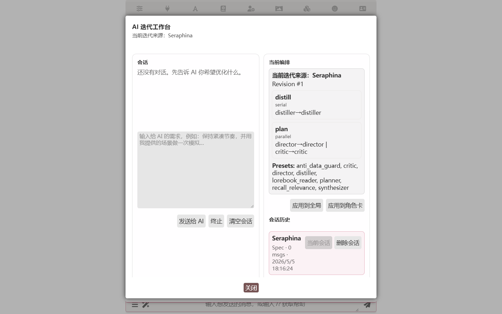
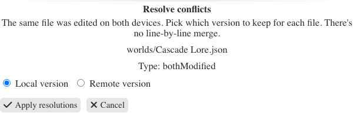

AI 角色扮演的完整工具链：Luker 深度盘点
从 SillyTavern 分叉而来却不止步于分叉——记忆图、多 Agent 编排、AI 迭代工作台、局域网同步、安卓 APK，一条长线下的 RP 玩家值得花时间认真盘点这款平台。
如果只用一句话说清楚 Luker官网，它是把「角色扮演长线开车需要的整条工具链」塞进一个安装包里的完整前后端——角色卡、世界书、预设、长期记忆、生成前规划、联网查资料，该有的不该缺的都在这里。从 SillyTavern 分叉而来，上游成熟功能基本保留，数据双向兼容，跑腻了想回去把 data 目录复制回来就完事。但真正让它值得单独盘点的，是那些分叉之后才长出来的东西。
记忆图：给长线 RP 一张会生长的脑子
长线 RP 玩家最懂的痛点：跑了几百楼之后角色突然忘了早期剧情，忘了去过的那座茶馆，忘了你们在第三幕交换过的信物。Luker 的记忆图就是来解决这个的。
它的做法不复杂：回复生成后自动从剧情里提取人物、地点、事件，存成带类型的节点；下一轮对话生成前，又自动从历史节点里召回和当前上下文相关的部分，注入到提示词里。提取和召回都调 LLM，但不必和主对话用同一个模型——用便宜快的模型跑提取召回、旗舰模型只管写作，是最常见的省钱搭配。
上手也没什么门槛：打开扩展抽屉里的记忆开关，给提取和召回各配一个 API，然后正常聊天就好。三到五轮之后回头看，记忆面板里已经长出了节点列表和连边图。想验证效果也简单，回到剧情里提一个早期的地点或人物，观察回复是不是自然带出了相应细节。
亮点在于它不是把所有东西一股脑塞进系统提示词的老路——记忆图按节点类型分类，默认类型够用，真发现缺类型了还能自定义 Schema。这些配置细节在 Luker文档 里有详细说明。日常使用的三个建议也很实在：提取频率别贪多、持久注入要克制、先跑一段再调 Schema。
多 Agent 编排：不让单模型一次干太多事
单模型回复跳节奏、忘设定、出戏做总结——这些问题的根源往往不是模型本身不行，而是让它一个人同时扮演太多角色：既要理解上下文，又要想剧情走向，还要把控语气和文风。Luker 的多 Agent 编排把这些事拆开交给不同的 Agent 处理。
它提供 Spec、单 Agent、Agenda、Loop、Director 五种模式，每种模式的产出物不一样，但都共享同一个编排器面板。你可以让一个 Agent 专门做审校、一个 Agent 管剧情推进、一个 Agent 负责把控文风，各自独立跑。
AI 迭代工作台：一句话改编排不用手写提示词
多数人不需要手写 stage / node 或 Planner 提示词，AI 迭代工作台是官方推荐的定制方式——你说目标，AI 出方案，改动逐条审批。流程是：切到目标模式，在编排器面板点打开 AI 迭代工作台，一句话描述想要什么，AI 返回简短计划与方案，然后逐条审批，可以继续反馈多轮迭代，满意后应用到全局或角色卡。
能干的事远不止改编排。写 Skill——"把这套反八股规则做成 Skill 挂给评审 Agent"，起草、安装、挂载一条龙；调和工作单冲突——卡作用域下打开时，会对照卡绑定的世界书，格式类条目自动识别处理；甚至模拟评审——部分场景可以在不写真实状态的前提下先跑一遍看看效果。
Spec / Agenda 编辑器顶部还有一个 AI 快速生成入口，输入需求直接出一份完整方案，适合从零起步。不同的卡、不同的实验各自独立会话，历史可回看重放——同一张卡调崩了能找回上一版思路。

Skills 技能库：写作规则不再堆在巨型系统提示词里
很多 RP 玩家都经历过这种情况：写作规则全堆在一段巨型系统提示词里，改一处怕崩全局，想把某段规则复用到另一张卡上又得手动复制粘贴。Luker 的 Skills 技能库把规则模块化了——每条 Skill 是一个独立的规则单元，可以单独挂载、单独开关、单独维护。
这和多 Agent 编排配合起来特别舒服：审校 Agent 挂反八股的 Skill，文风 Agent 挂口语化的 Skill，想调整哪条规则就改那一个 Skill，不会影响其他部分。
局域网同步：电脑和手机的数据各改各的也能对齐
两台设备常态使用时，最怕的数据不同步。Luker 的局域网同步走的是同一网络直连，全程不经过云端，数据不出家门。配对方式也简单：在第一台设备上勾好要同步的类别、生成配对链接，第二台设备粘贴链接就配对成功。日常同步时点一下立即同步就行，两端交换变更并协调一致，只传差异，成熟数据集上通常一秒内完成。
存数据库的类别同步时按"一条聊天 / 一个预设 / 一本书"的文件粒度处理。但有个坑得提：settings.json 是一个大文件，哪怕只改了一小处也会整文件冲突，且只能整体二选一。建议固定一台设备改配置，先同步再换设备操作。真失手了也有退路，同步面板里的撤销上次同步只在本地回退到同步前状态。

安卓 APK：完整后端跑在手机里
手机党最懂的折腾：Termux 装后端、配端口转发、偶尔还会出各种奇怪的环境问题。Luker 的安卓 APK 从 官方下载 就能拿到，完整后端打包进了手机里，不用 Termux、不用端口转发，装完就能用。这对想在通勤路上也能继续 RP 的玩家来说，是一个实打实的硬需求。
短板也要说
Luker 有它的局限。记忆图的提取和召回都要额外调 LLM，虽然可以用便宜模型省钱，但毕竟增加了 API 调用开销。多 Agent 编排的能力强大，但上手门槛比单模型直接对话要高——五种模式各自的适用场景需要花时间摸索。局域网同步的冲突处理目前只能整体二选一，不支持逐行合并，对同时在两台设备上改同一个文件的玩家来说不够灵活。
还有一点，虽然它和 SillyTavern 数据双向兼容，但毕竟是分叉出来的项目，上游的某些新特性什么时候能同步过来，取决于分叉的节奏。想追最前沿酒馆特性的玩家可能需要在两个工具之间做一些取舍。
什么样的人该用它
长线 RP 玩家——一个车跑几十上百楼，在意前后剧情的一致性，被角色"失忆"折腾过不止一次。记忆图和多 Agent 编排就是为他们量身定做的。
原版酒馆用户——手里积累了一堆角色卡和预设，想升级记忆和编排能力但不想丢掉这些东西。数据双向兼容让迁移成本几乎为零，可以平滑过渡。
手机党——想在一部手机上跑完整的 RP 后端加界面，不想折腾 Termux 和端口转发。安卓 APK 直接解决了这个长期痛点。
自部署玩家——想在电脑或服务器上跑自己的实例，还要多设备同步。局域网同步加上完整后端，这套工具链能覆盖从桌面到手机的全场景。